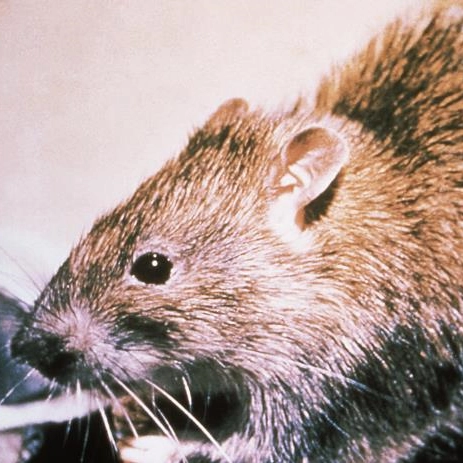
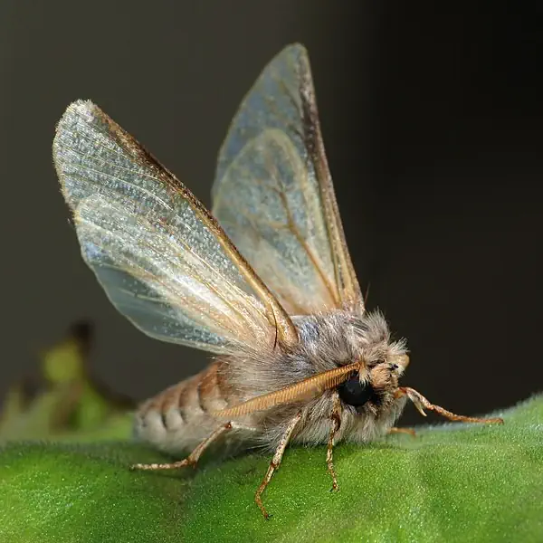

Rats
Rats are typically distinguished from mice by their size. Usually the common name of a large muroid rodent will include the word "rat", while a smaller muroid's name will include "mouse". The common terms rat and mouse are not taxonomically specific. There are 56 known species of rats in the world.[1]
Moths
Moths are a group of insects that includes all members of the order Lepidoptera that are not butterflies.[1] They were previously classified as suborder Heterocera, but the group is paraphyletic with respect to butterflies (suborder Rhopalocera) and neither subordinate taxon is used in modern classifications. Moths make up the vast majority of the order. There are approximately 160,000 species of moth